Termine:
| 09.12.16 | Weihnachstfeier | |
| 10.12.16 | Landesliga | Augsburg, Bechhofen |
| 10.12.16 | Vorrunde Bundespokal | Leimen |
Kunstradfahrerinnen gewinnen den Bezirksnachwuchspokal
 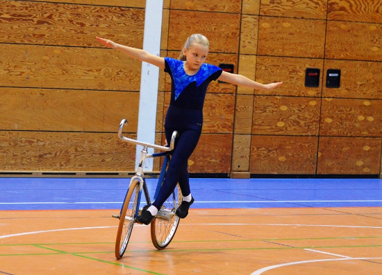
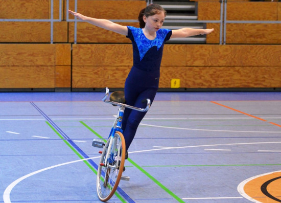
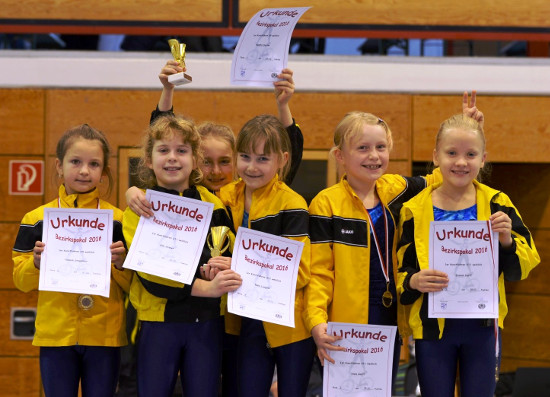
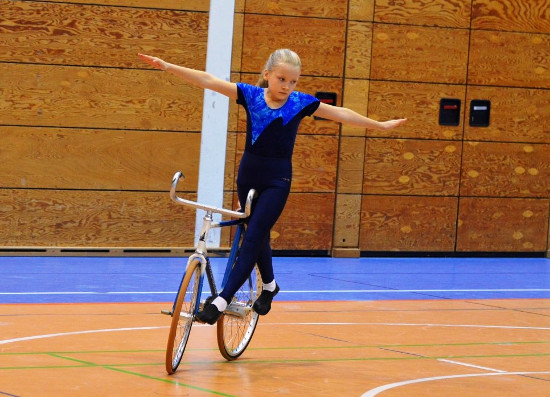
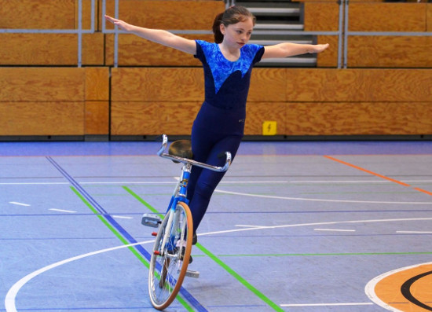
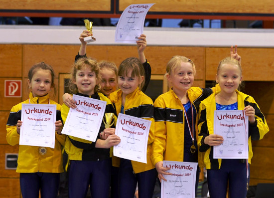
26.11.2016
Martin und Thomas spielen für Deutschland
Knappe Niederlagen gegen den Weltmeister (4:5) und Vizeweltmeister (2:3)
Ergebnisse Länderkampf Elite GER-SUI-AUT (Kissing = GER2)
Deutsche Radsportler dominieren Länderkampf in der Schweiz [rad-net 22.11.2016]
Kissinger Duo ärgert den Weltmeister [AZ 24.11.2016]
19.11.2016
Nur zwei Punkte für Thomas und Fabian
Kissing gewinnt nur zwei Punkte [AZ 23.11.2016]
12.11.2016
Für den Aufstieg in die 1. Bundesliga reicht es noch nicht - Platz 5 für Martin und Thomas beim Aufstiegsfinale in Moers
Ergebnisse Aufstieg 1. Bundesliga
Kissinger verpassen den Aufstieg [AZ 25.10.2016]
21.10.2016
Tolle Erfolge in der Bayern Cup Gesamtwertung
| U 13 | Greta Koch | 2. Platz |
| U 11 | Nina Langner | 3. Platz |
| 2er U 15 | Josune Wille/ Stefanie Grießer | 2. Platz |
16.10.2016
Martin und Thomas gewinnen Bayernpokal
Egarter-Kieferle holen den Pott [AZ 10.10.2016]
08.10.2016
Andi und Lukas steigen in die 2. Bundesliga auf

Ergebnisse Aufstieg 2. Bundesliga
Es geht um den Aufstieg [AZ 07.07.2016]
Ungeschlagen in Liga zwei [AZ 14.07.2016]
09.07.2016
Mit anspruchsvollen Übungen zum Bayernpokal Endlauf
Technisch schwierig, aber elegant [AZ 05.07.2016]
02.07.2016
Martin und Thomas sind Meister in der 2. Bundesliga
Für Kissing wird es spannend [AZ 17.06.2016]
Kissing holt den Meistertitel [AZ 24.06.2016]
18.06.2016
Andreas und Lukas stehen im Aufstiegsfinale zur 2. Bundesliga
Ergebnisse Vorrunde Aufstieg 2. Bundesliga
Die Entscheidung fällt in Kissing [AZ 16.06.2016]
11.06.2016
Christian und Moritz fünfter bei den Aufstiegsspielen zur Bayernliga
Ergebnisse Aufstiegsrunde zur Bayernliga
04.06.2016
Großer Erfolg für Kissing – 5 erste Plätze und wieder persönliche Bestleistungen für unserer Sportlerinnen
 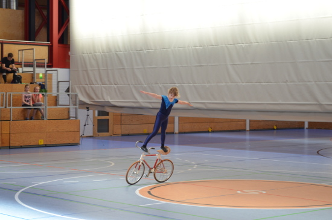
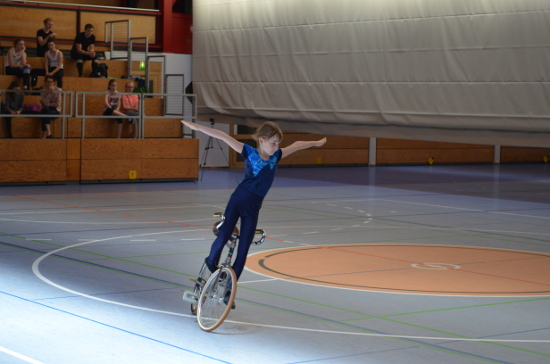
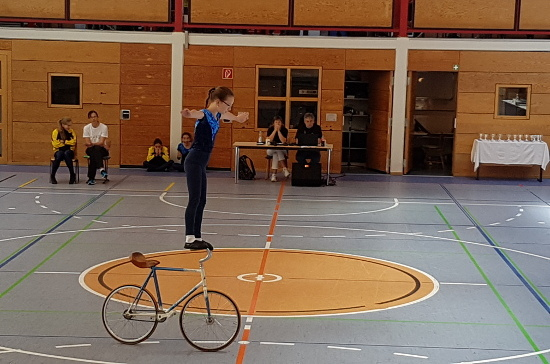
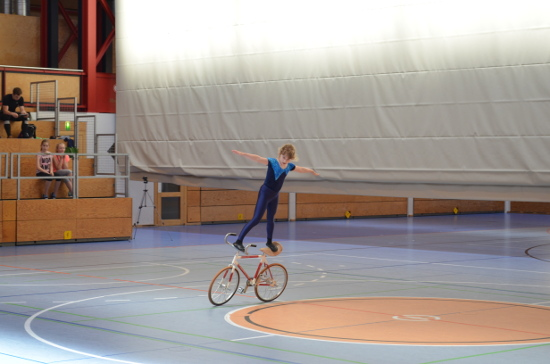
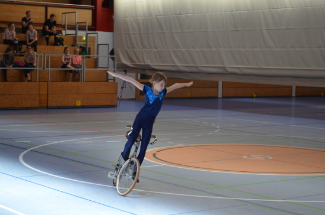
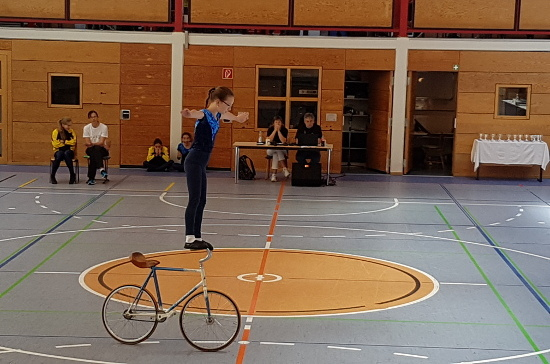
28.05.2016
Die erste Mannschaft grüßt weiter von der Spitze der 2. Bundesliga
Kissing verschenkt drei Punkte [AZ 31.05.2016]
28.05.2016
Erfolgreicher Abschluss der Landesliga, Kissing 4 Spielt um den Aufstieg
Am letzten Spieltag der Landesliage Süd konnten alle Kissinger Manschaften einen erfolgreichen Spieltag feiern. Christian Colditz und Moritz Hartl qualifizierten sich mit dem dritten Platz klar für die Aufstiegsspiele zur Bayernliga. Sie mussten sich lediglich gege Mindelheim 1 mit einem knappen 3:4 geschlagen geben. Norbert und Florian Menzinger beendeten die Liga auf dem 6. Platz, punktgleich mit Nürnberg. Den Klassenerhalt gesichert haben sich Daniel Dosch und Peter Doll; Michael Doll und Martin Hartmond müssen in die Relegation.
Die Liga gewann Mindelheim 1 mit sechs Punkten Vorsprung vor Pullach.
09.05.2016
Bayerische Meisterschaft Kunstradfahren, Greta Koch 3. und Josune Wille mit Stefanie Grießer 4. Platz
| 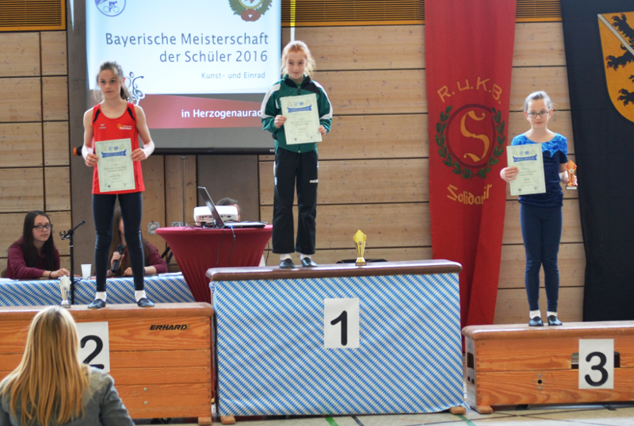 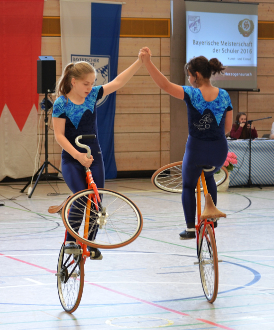 | 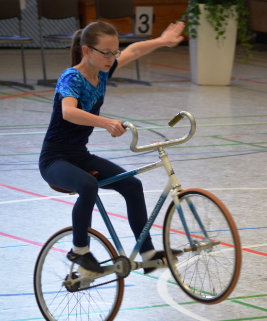 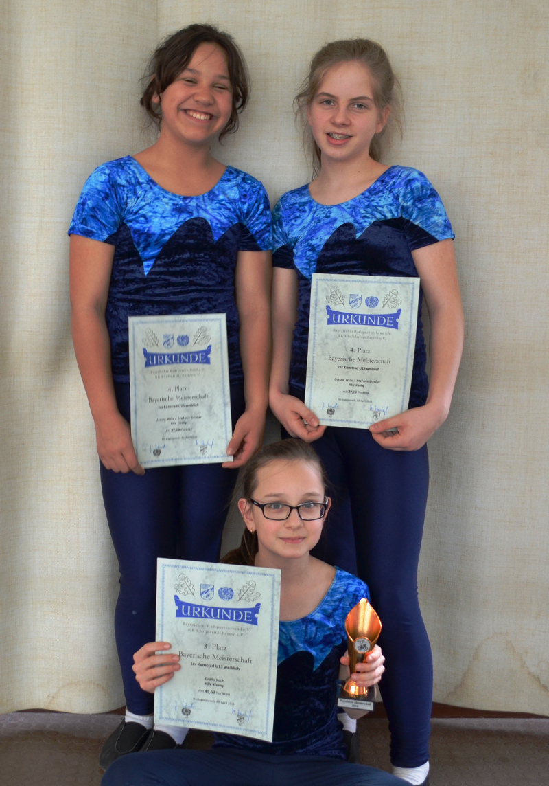 |
30.04.2016
Kissing 2 gewinnt die Bayernliga, Kissing 3 verpasst knapp die Aufstiegsspiele
Lukas und Andi konnten sich heute am Endspieltag in Kissing souverän den 1. Platz sichern. Kissing 3 mit Moritz als Ersatz für den erkälteten Fabian, verpasste im letzten Spiel leider mit einer 2:3 Niederlage gegen Gaustadt 3 die Aufstiegsrunde.
Unsere Junioren konnte wegen einer Verletzung leider nicht antreten.
Kissing hat Meistertitel im Blick [AZ 30.04.2016]
Kissing holt den Meistertitel [AZ 05.05 2016]
30.04.2016
Christian und Michael schlagen sich bei der Deutschen Meisterschaft achtbar und belegen den 8. Platz. Christian Metzger ersetzt verletzten Bruder.
Ergebnisse Deutsche Meisterschaft Junioren
24.04.2016
Erfolg für unseren Kunstrad Nachwuchs beim Paartal Cup

15.04.2016
Kissinger Gemeinde ehrt unsere Sportler
15.04.2016
Josef und Michael fahren zur Deutschen Meisterschaft
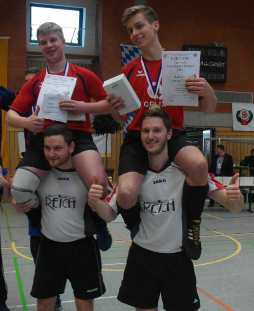
Ein Team im Doppeleinsatz [AZ 11.03.2016]
Souveräne Leistung [AZ 14.03.2016]
Überlegen ins Halbfinale gespielt [AZ 15.03.2016]
12.04.2016
Andreas und Lukas erneut Schwäbischer Meister
Ergebnisse Schwäbische Meisterschaft Elite
AZ; 06.04.2016; Für die anderen eine Nummer zu groß
03.04.2016
Kissing Jubelt!
Herausragende Leistungen bei der Bayerischen Meisterschaft 2016
Ergebnisse: U13 U15 U17 U19 Elite
AZ; 16.02.2016; Kissing bestätigt seine Klasse
14.02.2016